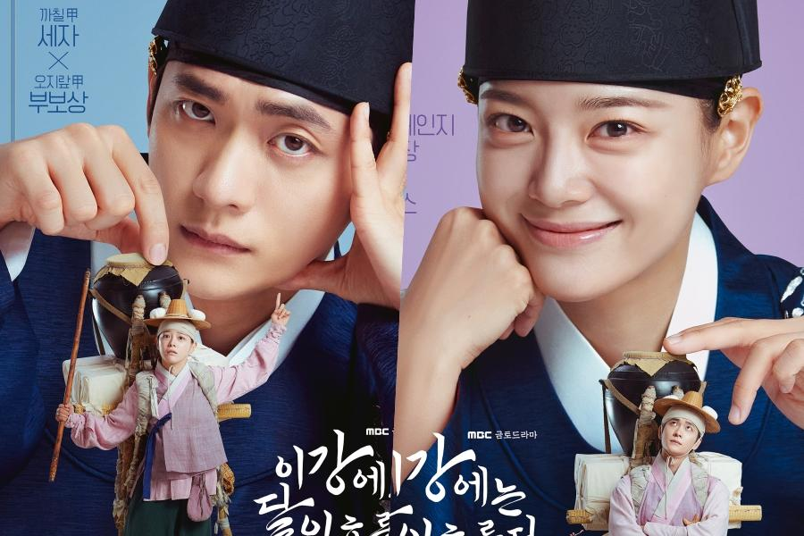

Kim Se-jeong Leaves Jellyfish Entertainment After A Decade: What's Next For The Multi-Talented Star?

A decade-long partnership has come to an end. Singer and actress Kim Se-jeong will not renew her exclusive contract with Jellyfish Entertainment, the agency announced on Monday, marking the conclusion of a relationship that saw her transform from a hopeful trainee to one of Korea's most beloved entertainers.
The announcement, while significant, was notably brief. Jellyfish Entertainment confirmed the departure without providing details about the circumstances or Se-jeong's future plans. Kim Se-jeong herself has not yet disclosed her next agency, leaving fans to speculate about where her career will head next.
From Produce 101 to Stardom
Kim Se-jeong's journey to fame is the stuff of K-pop legend. She first captured public attention in 2016 when she appeared on Mnet's survival competition show "Produce 101," where her exceptional vocals and charming personality earned her a second-place finish.
That ranking secured her a spot in I.O.I, the project girl group formed from the show's top 11 contestants. Though I.O.I was designed to be temporary—disbanding after just one year of activities—the group left an indelible mark on K-pop history and launched the careers of numerous stars, including Chungha, Somi, and Se-jeong herself.
Following I.O.I's disbandment, Se-jeong returned to Jellyfish Entertainment to debut as a member of Gugudan, a nine-member girl group launched in June 2016. Despite featuring several talented members and achieving moderate success, Gugudan struggled to match the popularity of its I.O.I alumni and eventually disbanded in December 2020.
Transition to Acting
Since Gugudan's dissolution, Kim Se-jeong has focused primarily on acting, building an impressive drama resume that has established her as a legitimate actress rather than merely an idol-turned-actor.
Her breakout acting role came in the OCN and tvN drama series "Uncanny Counter" (2020-23), where she played a demon hunter alongside Jo Byung-gyu. The supernatural action drama became a surprise hit and showcased Se-jeong's ability to handle physically demanding roles while delivering emotional performances.
She further cemented her acting credentials with starring roles in SBS's "Business Proposal" (2022), a romantic comedy that became a global phenomenon on Netflix, and "Today's Webtoon" (2022), where she played an aspiring webtoon editor. Both dramas demonstrated her versatility and comedic timing, earning her a devoted following among K-drama fans worldwide.
This successful pivot to acting has made Se-jeong one of the few K-pop idols to achieve genuine recognition as an actress. While many idols dabble in acting, few manage to build sustainable acting careers—Se-jeong is an exception.
The I.O.I Reunion Factor
The timing of Se-jeong's departure is particularly interesting given the upcoming I.O.I reunion. The legendary project group is set to reunite with nine members for a tour titled "LOOP" in late May 2026—their first major activities since the group's original disbandment.
This reunion has been highly anticipated by fans who watched the original "Produce 101" and have followed the members' divergent careers over the past decade. While not all 11 original members will participate, nine is a substantial reunion that promises to reignite nostalgia for the group's brief but impactful existence.
Whether Se-jeong's agency change will affect her participation in the I.O.I reunion remains unclear. Such multi-agency projects typically require coordination between all involved companies, and being in transition could potentially complicate matters—or, conversely, provide more flexibility.
What's Next?
Kim Se-jeong has not disclosed her next agency, leaving the industry buzzing with speculation. Several major entertainment companies would undoubtedly welcome a talent of her caliber, particularly given her dual appeal as both a singer and actress.
Some industry observers speculate she might sign with an agency that specializes in actor management, reflecting her current career focus. Others suggest she could join a major K-pop company that can support both her music and acting ambitions. A few have even suggested she might establish her own agency, following a growing trend among established Korean entertainers.
Whatever she decides, Se-jeong brings significant value to any partnership. Her proven track record in both music and acting, combined with a loyal fanbase and positive public image, makes her a safe bet for any company willing to invest in her continued development.
The Jellyfish Era
Looking back at her decade with Jellyfish Entertainment, it's clear that the partnership was mutually beneficial, if not always smooth. Jellyfish provided the platform for Se-jeong's initial rise to fame, supporting her through "Produce 101," I.O.I, Gugudan, and her transition to acting.
However, the company also faced criticism over the years for its handling of Gugudan, which many felt was mismanaged despite having strong members. The group's disbandment was met with disappointment from fans who believed Jellyfish failed to capitalize on its talent.
For Jellyfish, losing Se-jeong represents a significant departure. While the company has other artists on its roster, she was arguably its most successful and recognizable name. Her exit may prompt questions about the agency's ability to retain top talent in an increasingly competitive industry.
Fan Reactions
News of Se-jeong's departure has generated mixed reactions among fans. Many expressed support for her decision to move on, trusting that she knows what's best for her career at this stage. Others voiced concern about the transition period and hopes that it won't disrupt her acting momentum.
"Whatever Se-jeong decides, I'll support her," one fan wrote on social media. "She's proven herself countless times. Any agency would be lucky to have her."
Others took a more practical view: "This is pretty normal in the industry. Ten years is a long time with one company. It's natural to want a change, especially when your career has evolved as much as hers has."
The overwhelming sentiment, however, is one of curiosity about what comes next. Se-jeong has consistently surprised fans with her career choices, and this latest development promises another chapter in an already remarkable journey.
Looking Ahead
At 29, Kim Se-jeong is at a pivotal point in her career. She's established enough to have leverage in negotiations but young enough to have decades of potential ahead. The choices she makes now could define the next phase of her professional life.
For now, fans can look forward to the I.O.I reunion in May, which will bring Se-jeong back together with her former groupmates for what promises to be an emotional return. Beyond that, the future remains unwritten—and with her track record of success, there's every reason to believe the best chapters are yet to come.
Stay tuned for updates on Kim Se-jeong's new agency announcement and I.O.I reunion details.